Repaso de la Tanda 10S7
La batería de pruebas en 0 fallos de una pasada (tres veces seguidas y en 35 minutos), la descarga más ligera, las zonas de toque de 44 px y los retoques de la 10N12. Marca cada punto en tu teléfono cuando lo hayas comprobado (se guarda en este navegador).
10S3 · Respuestas a mis dudas (seguimiento 10S3b) ✅ Hecho — Captura de la hoja del trenCon Design 02c al lado. Es sin pase. Dónde: RESERVAS > Llegada y vuelta, viaje en tren. 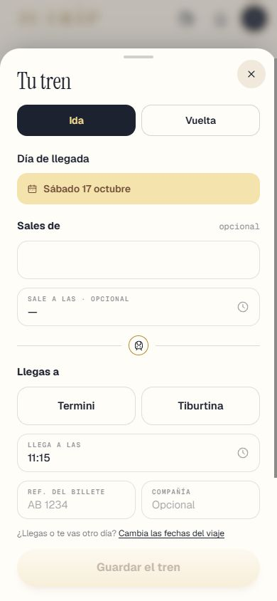
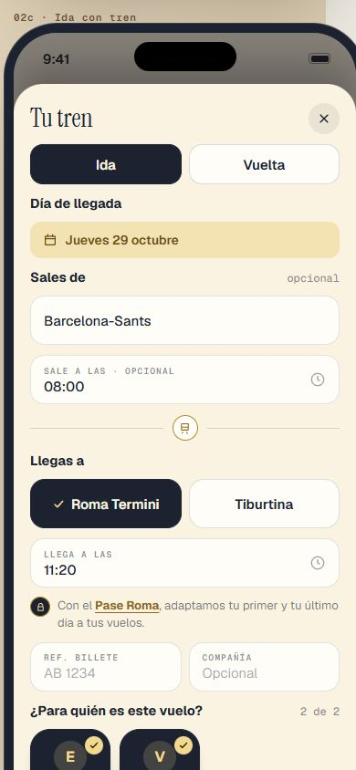
✅ Hecho — HOY: el billete como en DÍAS, «BCN 08:30 → FCO 11:15», sin cortar la hora de llegadaComprobado por render de servidor, sin captura de HOY. La vuelta en HOY conserva su tarjeta. Dónde: HOY, con pase, día de llegada. ✅ Hecho — Castillo «por dentro»: foto de día apuntadaSin crédito (no hay autor ni licencia). Dónde: Parada «Castillo (por dentro)», EXPLORAR y Añadir parada. ✅ Hecho — Free Tour: reservarlo o cambiarle la hora nunca rehace ni mueve días, tampoco por reservasParaMotorCausa que faltaba: reservasParaMotor mandaba el Free Tour al motor en cada «rehacer días». Sin tocar servidor ni motor. Caso nuevo en pruebaTanda10S3. Dónde: RESERVAS > Entradas y Free Tour > Free Tour a otra hora; mira todos los días. 1 · El presupuesto ✅ Hecho — El vuelo, tren, autobús y barco suman siempre, con pase y sin élNada más del presupuesto depende del pase. Prueba antigua puesta al día (pastilla de precio siempre). Dónde: Presupuesto, cualquier cuenta: vuelo 150 € + hotel 280 € + Coliseo 50 €. ✅ Hecho — Leyenda separada: «Transporte», «Alojamiento», «Ruta» (y «Extras»), cada uno con su color; el bloque de abajo juntoComprobado a 375 px: no se corta (Ruta pasa a una segunda línea). El botón flotante tapa un poco el borde de Extras. Dónde: Presupuesto, debajo del total. 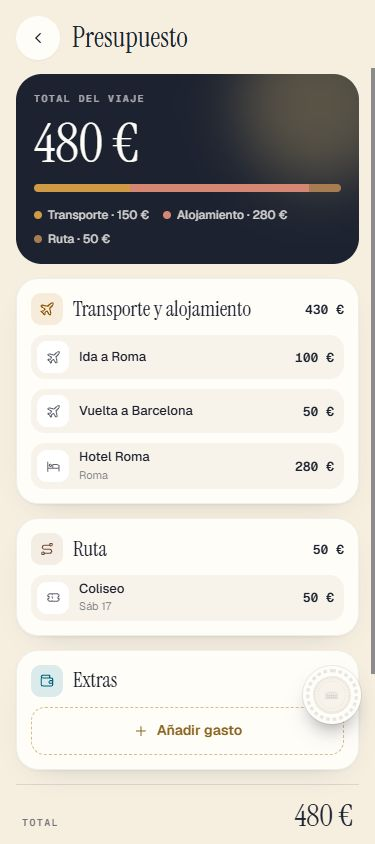
2 · RESERVAS: bloques que se pliegan ✅ Hecho — «Llegada y vuelta» y «Alojamiento» cerrados cuando están «Listo» (icono verde, sin línea bajo el título); se abren y cierran; abiertos mientras falta algoDónde: RESERVAS, con vuelo y alojamiento puestos. 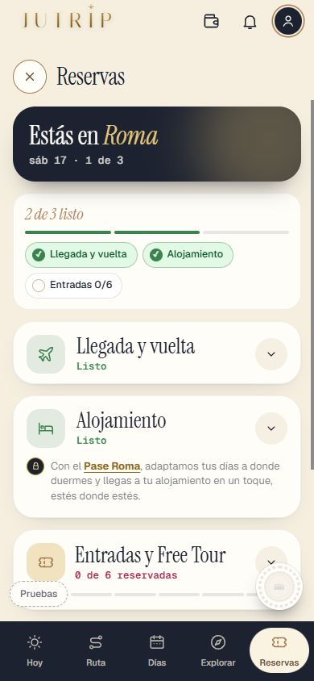
✅ Hecho — El precio dentro («Precio · 110 €» con «Cambiar»); el alojamiento abierto con el estilo del vueloCon pase, la zona real de la hoja no está cubierta por la prueba (usa una zona inventada). Dónde: RESERVAS, bloques abiertos. 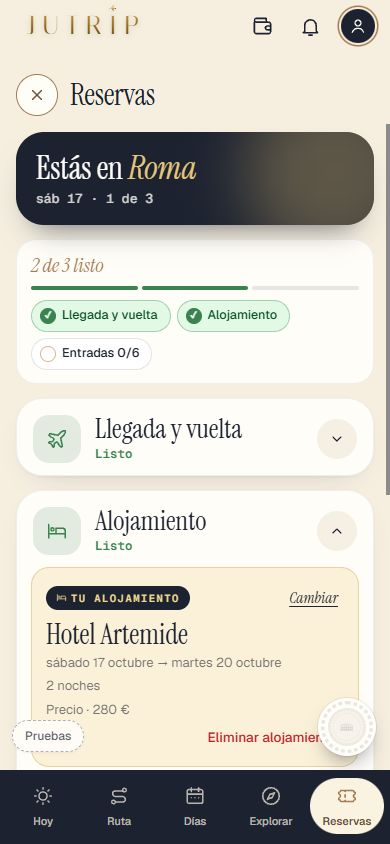
✅ Hecho — Línea del pase sin pase: dentro si abierto, fuera bajo la cabecera si cerrado; «Eliminar vuelo» a la derecha (también tren, bus y barco)Tren, bus y barco usan el mismo componente; la prueba solo ejerce el avión. Dónde: RESERVAS, cuenta sin pase. 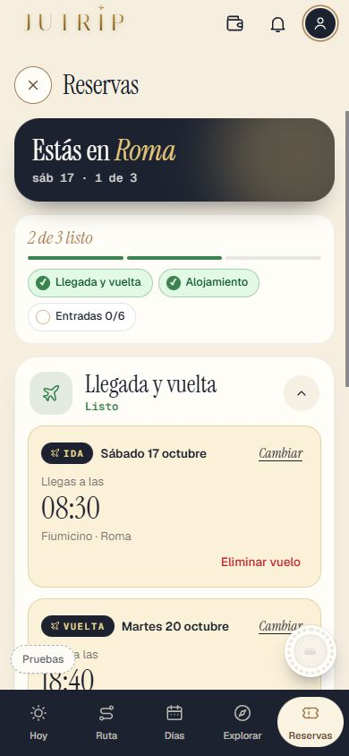
3 · Entradas y Free Tour, solo lo de tu ruta ✅ Hecho — Solo «En tu ruta» y al día: añadir un sitio con entrada (Capitolinos) lo hace aparecer; quitarlo, desaparecer; con la entrada guardada, «Ya no está en tu ruta»; sin «Ver 3 más»Causa: la lista era cerrada, de 8 nombres. Un sitio repetido en otro día se duplica (una entrada por parada). Dónde: DÍAS: añade Museos Capitolinos; mira RESERVAS. 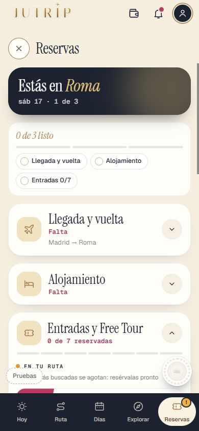
4 · [Añadir otra reserva] y su buscador ✅ Hecho — Casilla libre con sugerencias con foto; la sugerencia entra en la ruta como primera parada del día elegido, marcada, sin quitar nada; lo escrito, solo en RESERVASCon pase, igual que sin pase (de momento). Si el día es de excursión o de vuelta, la parada no se añade. Dónde: RESERVAS > Añadir otra reserva > «cupula». 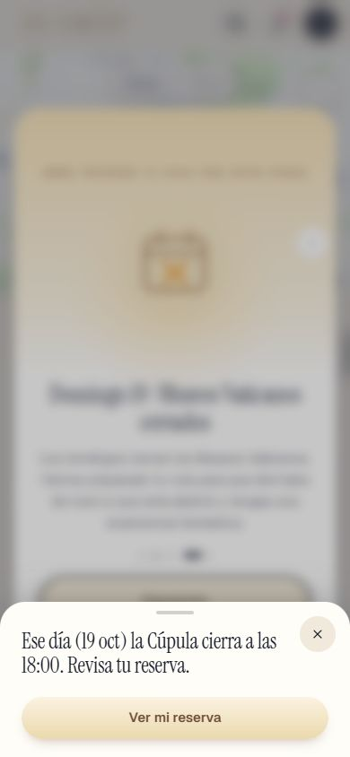
✅ Hecho — Línea gris del pase si la hora no cuadra con su franja (sin pase)Dónde: Cuenta sin pase, hora de tarde en una parada de mañana. 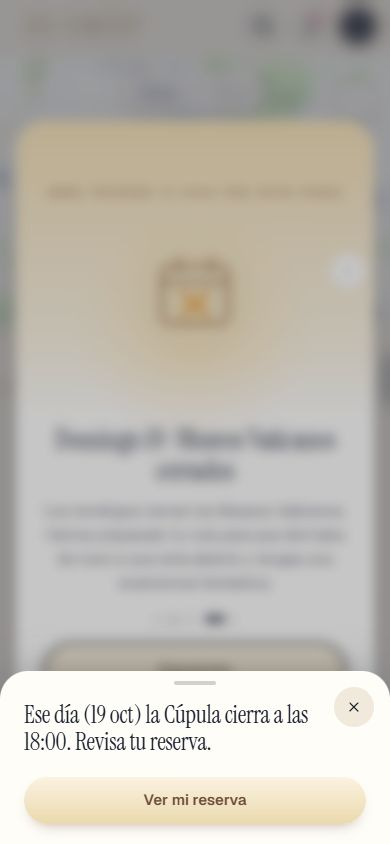
✅ Hecho — Buscador sin acentos ni mayúsculas, palabras a medias, letra equivocada, nombre en italiano«cupula», «capito», «cupla», «Cupola», «Musei Capitolini». Dónde: Añadir otra reserva. 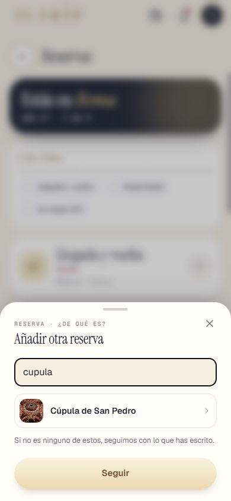
5 · Todos los buscadores, igual ⚠️ A medias — Una sola forma de buscar (src/lib/busqueda.ts) en EXPLORAR y «+» de DÍAS, destino de la primera pantalla, país de Logros y Añadir otra reservaSin cambiar: «Añadir parada», AttractionsFinder y la ciudad de salida buscan en Mapbox, que ya tolera acentos y erratas; que busquen también en nuestro catálogo es otra tanda. Regla añadida. Dónde: EXPLORAR: «Cupola» y «Musei Capitolini». 6 · «Reorganizar este día» solo con pase ✅ Hecho — Sin pase no sale; con pase, como antesDónde: DÍAS, día con 2 o más paradas, con y sin pase. 7 · Lo pendiente de otras tandas ✅ Hecho — PiezaSegura en cada día de DÍAS, cada bloque de RESERVAS y cada aviso de la campanaSolo se nota si algo falla. Gancho de prueba solo en desarrollo. Dónde: No se ve a simple vista. ✅ Hecho — Zonas de toque de 44×44 en hojas, modales y menús7 botones cambiados (Rutas, tiempo entre paradas, «Cambia las fechas», pestañas del explorador, «+ Añadir», «Me gusta» grande, línea del pase). Sin tocar el «Me gusta» pequeño de 30 px (pisaría el botón de debajo): decisión tuya. Dónde: Vuelo, menús «…», explorador, aviso del pase. 8 · La prueba ✅ Hecho — pruebaTanda10S4 (F, G, H, I) y pruebaTanda10S3 con el caso nuevo del Free Tour, más pruebaJutripSin migración. Dónde: No es de móvil. Todas las capturas
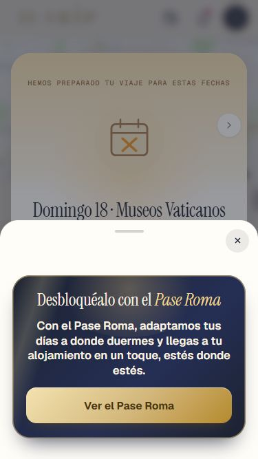
10s_aviso_375x667 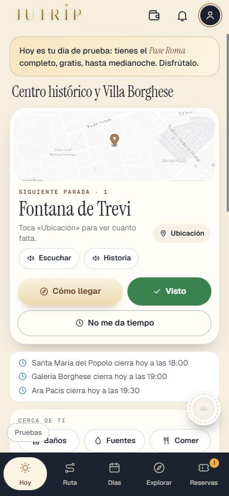
10s_cama_dia_de_prueba 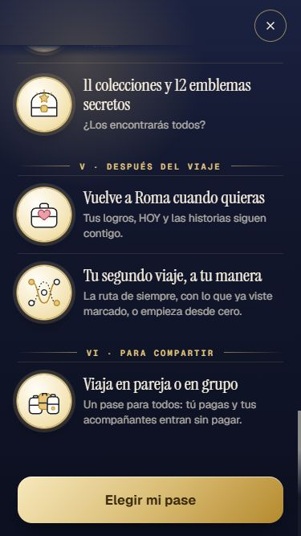
10s_lista_x_375_final 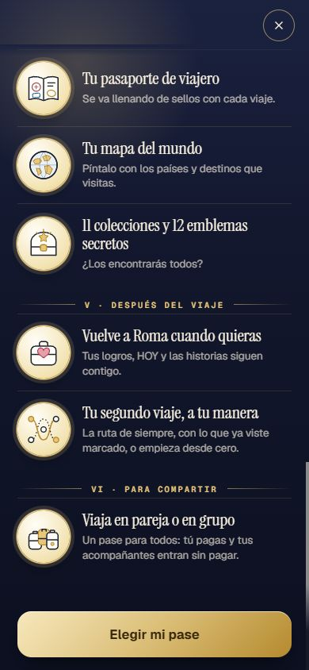
10s_lista_x_final 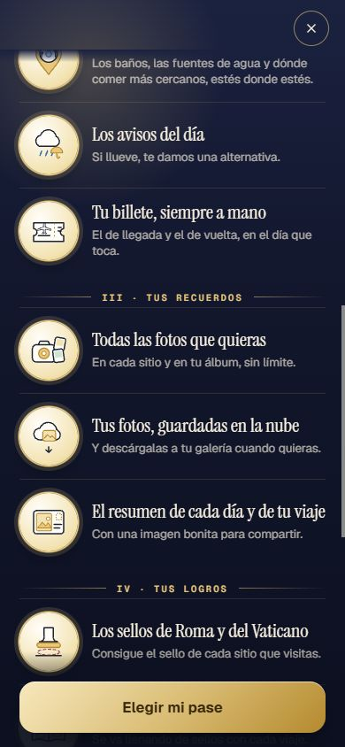
10s_lista_x_medio 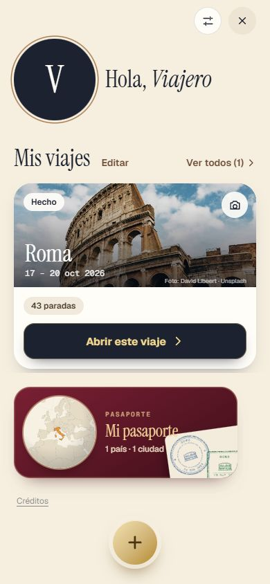
10s_mis_viajes_fechas 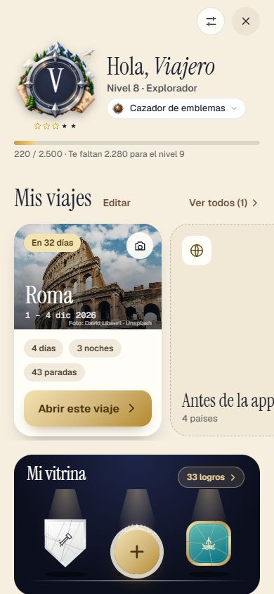
10s_toque_ajustes_antes 10s_toque_ajustes_despues 10s_toque_cama_antes 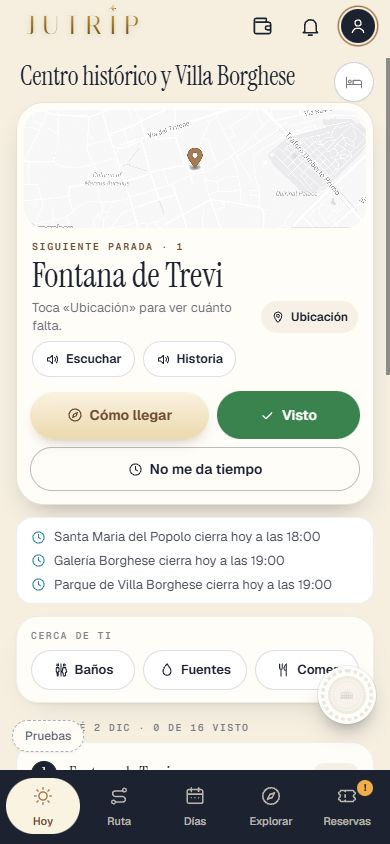
10s_toque_cama_despues